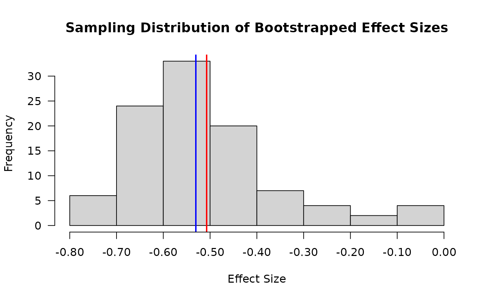

Bootstrapping Example
Jonathan Bakdash and Laura Marusich
2024-08-14
Source:vignettes/repro_bootstrapping.Rmd
repro_bootstrapping.RmdReproducible Example of Bootstrapping
Below we illustrate a reproducible example of bootstrapping with
rmcorr. Note, only the estimated confidence interval changes
with bootstrapping. We also show how to extract the sampling
distribution for bootstrapped rmcorr effect size.
-
set.seed() is used to make the results reproducible.
-
nreps is set to only 100 to run this example quickly. Ideally,
it should be > 500.
Rmcorr effect size with Bootstrapped 95% Confidence Inverval
set.seed(532)
boot.blandrmc <- rmcorr(Subject, PaCO2, pH, bland1995,
CIs = "bootstrap",
nreps = 100,
bstrap.out = T)
#> Warning in rmcorr(Subject, PaCO2, pH, bland1995, CIs = "bootstrap", nreps =
#> 100, : 'Subject' coerced into a factor
boot.blandrmc
#>
#> Repeated measures correlation
#>
#> r
#> -0.5067697
#>
#> degrees of freedom
#> 38
#>
#> p-value
#> 0.0008471081
#>
#> 95% confidence interval
#> -0.726023 -0.05893805Sampling Distribution of Bootstrapped Effects
In this graph, the x-axis is the bootstrapped rmcorr effect sizes and the y-axis frequency. The red line is the mean of the sampling distribution and blue line is the median of the sampling distribution. Because these two values are calculated from the bootstrap sampling distribution, note that they slightly differ from the non-bootstrapped point estimated effect size.
boot.rmcorr.samplingdist <- round(boot.blandrmc$resamples, digits = 2)
boot.rmcorr.mean <- mean(boot.blandrmc$resamples)
boot.rmcorr.median <- median(boot.blandrmc$resamples)
x.vals <- sprintf("%.2f", seq(-0.80, 0.00, by = 0.10))
hist(boot.rmcorr.samplingdist,
main = "Sampling Distribution of Bootstrapped Effect Sizes",
xaxt = "n",
xlab = "Effect Size",
las = 1)
abline(v = boot.rmcorr.mean, col = "red", lwd = 2)
abline(v = boot.rmcorr.median, col = "blue", lwd = 2)
axis(1,
at = as.numeric(x.vals),
labels = x.vals)
#Compare point-est effect for bootstrap vs. non-bootstrap model
#Boostrapped effect sizes
#Mean
boot.rmcorr.mean
#> [1] -0.5073347
#Median
boot.rmcorr.median
#> [1] -0.5304375
#Non-bootstrapped
blandrmc <- rmcorr(Subject, PaCO2, pH, bland1995)
#> Warning in rmcorr(Subject, PaCO2, pH, bland1995): 'Subject' coerced into a
#> factor
blandrmc$r
#> [1] -0.5067697